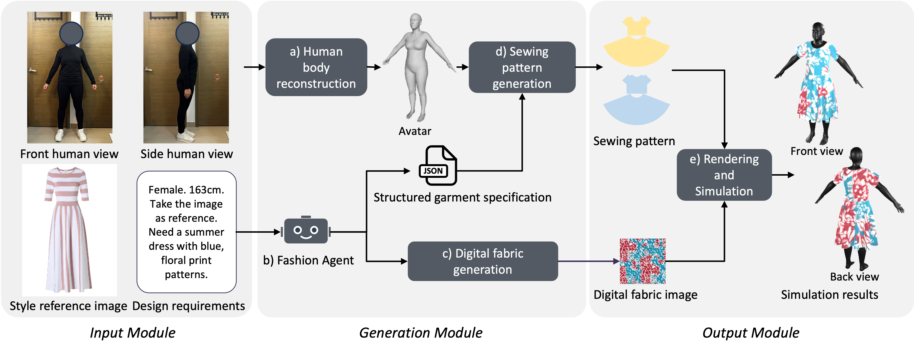
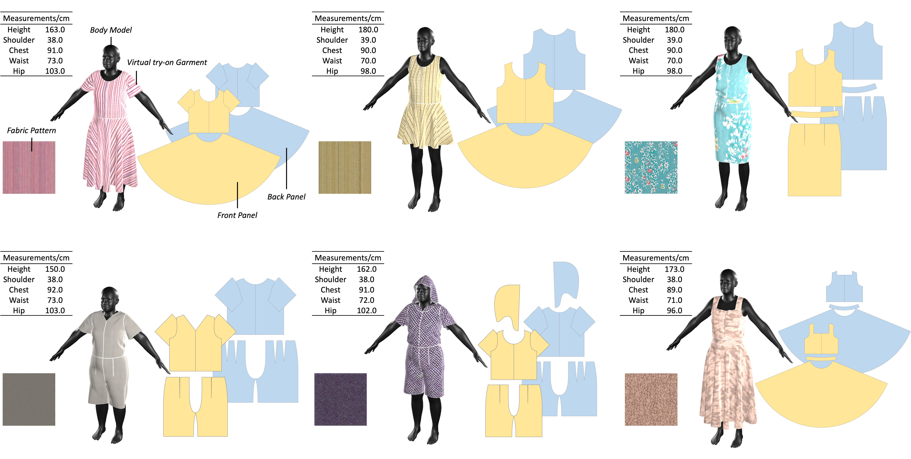

EasyFashion: A Human-AI Co-Creation System for Personalized Fashion Design and Sewing Pattern Generation
Abstract
People often want garments that reflect their aesthetic preferences, fit their bodies, and meet their sizing needs, yet turning these requirements into physical garments remains difficult. Ready-to-wear options provide limited personalization, while custom tailoring is costly and time-consuming. Recent generative artificial intelligence (AI) systems can visualize garment ideas but often stop short of supporting downstream production. To address this gap, we present EasyFashion, a human-AI co-creation system that enables users to iteratively refine design intent for personalized garment style and size, evaluate designs through virtual try-on on reconstructed personal avatars, and generate sewing patterns for garment production. Using reference images, text descriptions, and body photos as input, EasyFashion translates user intent into structured garment specifications and try-on results. Technical experiments, user studies, and a real-world production case demonstrate the value of EasyFashion for multimodal design expression, body-specific evaluation, and production-oriented outputs in personalized garment design.
Video
Overview

Results

BibTeX
@article{qu2026easyfashion,
title={EasyFashion: A Human-AI Co-Creation System for Personalized Fashion Design and Sewing Pattern Generation},
author={Qu, Hong and Xu, Zhaoxiang and Luo, Jinbo and Zhao, Yujie and Zhang, Jie and Yang, Yadie},
journal={arXiv preprint arXiv:2609.18483},
year={2026},
eprint={2609.18483},
archivePrefix={arXiv},
primaryClass={cs.HC},
url={https://arxiv.org/abs/2609.18483}
}